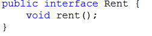
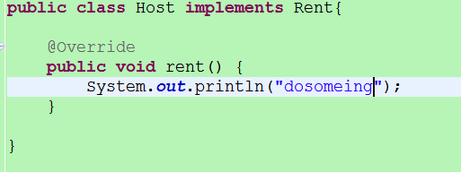
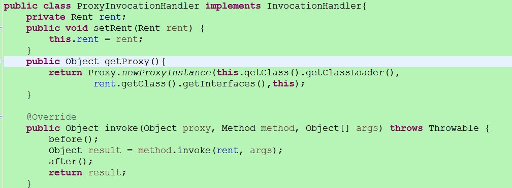
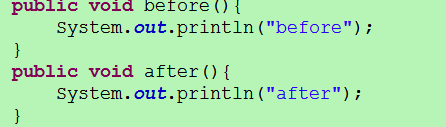
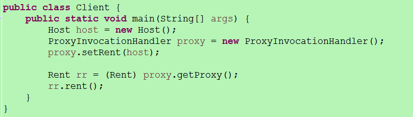
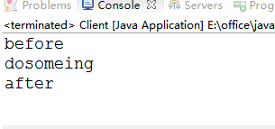

在学习Spring的时候，我们知道Spring主要有两大思想，一个是IoC，另一个就是AOP。
对于IoC，依赖注入就不用多说了，而对于Spring的核心AOP来说，我们不但要知道怎么通过AOP来满足的我们的功能，我们更需要学习的是其底层是怎么样的一个原理，而AOP的原理就是java的动态代理机制，所以本篇就是对java的动态机制进行一个回顾。
在java的动态代理机制中，有两个重要的类或接口，一个是 InvocationHandler(Interface)、另一个则是 Proxy(Class)，这一个类和接口是实现我们动态代理所必须用到的。
每一个动态代理类都必须要实现InvocationHandler这个接口，并且每个代理类的实例都关联到了一个handler，当我们通过代理对象调用一个方法的时候，这个方法的调用就会被转发为由InvocationHandler这个接口的 invoke 方法来进行调用。
接下来我们来看看Proxy这个类：
Proxy这个类的作用就是用来动态创建一个代理对象的类，它提供了许多的方法，但是我们用的最多的就是 newProxyInstance 这个方法
好了，在介绍完这两个接口(类)以后，我们来通过一个实例来看看我们的动态代理模式是什么样的：
首先我们定义了一个Rent类型的接口，为其声明了两个方法：

接着，定义了一个类来实现这个接口，这个类就是我们的真实对象，Host类:

下一步，我们就要定义一个动态代理类了，前面说了，每一个动态代理类都必须要实现 InvocationHandler 这个接口，因此我们这个动态代理类也不例外：


最后，来看看我们的Client类：

我们先来看看控制台的输出：

我们看到，在真正通过代理对象来调用真实对象的方法的时候，我们可以在该方法前后添加自己的一些操作
这也就证明了当我通过代理对象来调用方法的时候，起实际就是委托由其关联到的 handler 对象的invoke方法中来调用，并不是自己来真实调用，而是通过代理的方式来调用的。
这就是我们的java动态代理机制